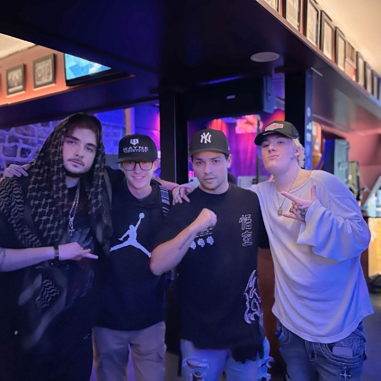

This project began when I reached out to Los Angeles-based artist Levi Zadoff over email and he was immediately down to collaborate. We had a great experience working together. I filmed the event alongside a friend using DSLR cameras and proper lighting to capture the energy and vibe of the day.
Afterward, I edited two artistic videos that reflected the unique styles of Levi and the other artists at the event, using techniques like masking, custom transitions, and motion graphics in After Effects to bring everything to life.
Credit: malavidamayne
This project was a chaotic blast. Donna Blood’s performance style is raw punk energy—screaming, moshing, and crowd chaos included. It was nothing like a typical shoot, and that’s what made it awesome.
I filmed handheld in the middle of a packed crowd, dodging elbows and flying limbs. Honestly, I almost didn’t make it out alive—but the shots were worth it. The energy was real, and the final edit reflects that grit and intensity.

Here's me at the event! It was an incredible day collaborating and capturing the energy of the shoot.
The location, lighting setup, and teamwork made this shoot feel like a professional production while keeping things fun and creative.